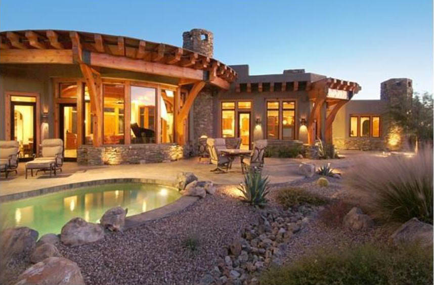
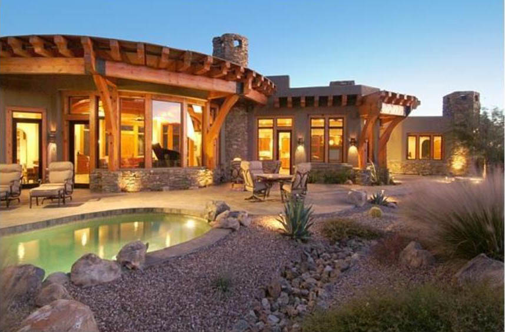

Clermont Elementary School

2014 Under Construction


L101 Day of Sailing on the Cheasepeake Bay
Set sail for “A Day on the Bay” and explore the rich history of the Cheasepeake Bay aboard Roundabout, a 41’ yacht crafted by renowned American boat builder Tartan Marine. Depart/return Herrington Harbour Marina (30 miles from Alexandria). Shove off at 10 a.m. and return to port at 6 p.m. After setting sail, enjoy delicious appetizers, champagne and the unofficial drink of the Cheasepeake Bay, the “Orange Crush”. Sail past the historic Thomas Point Shoal Light Station or US Naval Academy depending on the winds. You can relax or actively participate in sailing. Anchor in a cove and enjoy lunch, swimming and taking the dingy into untouched areas to capture a possible photo of a bald eagle or blue heron. Sail the afternoon away enjoying cocktails and snacks. Welcome up to 6 guests (adults only).
Donated by: Denton Family
Value: Priceless!
L102 Air Force One Departure Experience
Get an up close look at the President's private jet, Air Force One, for a family up to 5 people. Attend a Presidential departure at Andrews Air Force Base. You will receive a Secret Service briefing and overview of process before witnessing the President arrive via Marine One. President Obama will exit and walk to Air Force One, giving you and your guest a wave. Watch as AF1 taxis and takes off with the President in this once in a lifetime experience. Major David Vanassche, Chief Mission Director of Air Force One will coordinate viewing on a date convenient for the winning bidder (based on presidential schedule). The viewing will occur from a fenced line, approximately 100 yards away. Photography is allowed. You will not meet the President. Matt Anthes will contact you to begin scheduling, once the Presidential travel schedule is known.
Donated by: Mathew Anthes, Union Square Strategic
Value: Priceless

L103 Ocean View, DE Beach House
Plan ahead! This could be the next beach trip you take! 5 Day, 4 night Vacation home in Oceanview, Delaware! Located just 3 miles from downtown Bethany Beach , this house has 5 bedrooms and is situated in a family-friendly community with a fantastic pool (including poolside drink service), tennis, volleyball, putting green, fitness center, café and shuttle service to the beach (in season). Very close to Ocean City and Rehoboth too!
Donated by: Seward Family
Value: $1,200

L104 Oneweek Condo Outer Banks
Pirate's Cove Resort is a private island, gated waterfront resort community located on the Outer Banks of North Carolina, nestled between Manteo and Nags Head, just minutes from many beautiful North Carolina beaches. This beautiful resort vacation setting has it all - with private pools, elevators, game rooms, and every other Pirate's Cove resort amenities mentionable! Lil' Pirates Recreation programs will keep the kids entertained throughout your stay. Our young guests can learn to crab, fish, or participate in any of our scheduled activities during your Outer Banks family vacation. Kid's camp provides hours of enjoyment. Our Clubhouse offers a pool, baby pool, covered hot tub, billiard table, big screen TV, arcade, live music and a snack bar to grab a quick bite during your fun filled day. Keep in shape at the state-of-the art fitness center. A playground will entertain the young and young at heart. Volleyball courts, and a fossil search, complete the onsite activities available to guests vacationing at Pirate's Cove. World-class sport fishing is right at your
fingertips! Charter a trip with an offshore or inshore boat and bring home a prize catch, or at least a good fishing story. Stroll the marina docks when the boats come in and capture the excitement of marina front living
Donated by: Rudis & Sandra Flores
Value: $1,200
L105 Arizona Vacation Home
Already dreading Winter? Why not escape to sunny Arizona with your family or friends for a one week stay in a beautiful 3 bedroom home at Stone Canyon, a private golf community nestled against the Tortolita Mountains. Enjoy an 18-hole round of golf on the club's premier desert course. Consistently ranked among the Top 100 courses in the United States, stone canyon will thrill your senses and challenge your game. During your stay enjoy the homes private heated pool, hot tub and waterfall. Warm yourself by the indoor and outdoor fireplaces while watching the magical Arizona sunset as the quails run from cactus to cactus. One Week's stay (Date to be determined) for a single Family or 4 adults. Four 18-hole rounds of golf
included, additional rounds may be purchased. Access to Private Health Club, Spa and Tennis courts permitted, but must be payed for separately. Airfare not included. Rental car will be needed.
Donated by: Jeanne Olsen
Value: $2,500
 

L106 Whiskey Tasting
In addition to getting a bottle of the world’s greatest scotch, the winner of this auction will have the opportunity to invite 10 of his or her friends to join them at Diageo House for a night of great whisky tasting with Whisky Master Ewan Morgan. Choosing from the world’s greatest portfolio of whiskies, the tasting can include Diageo’s Scotches, Irish Whiskies, Bourbons and/or Canadian offerings. We will work out the program with the winner. The event will include cocktails, hors d'oeuvres, and a rare opportunity to taste whisky with a trained whisky master.
Donated by: Bertman Family
Value: Priceless